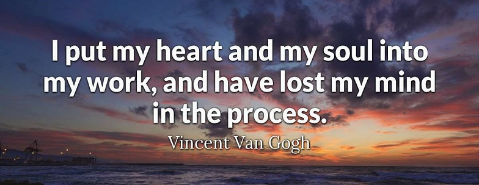
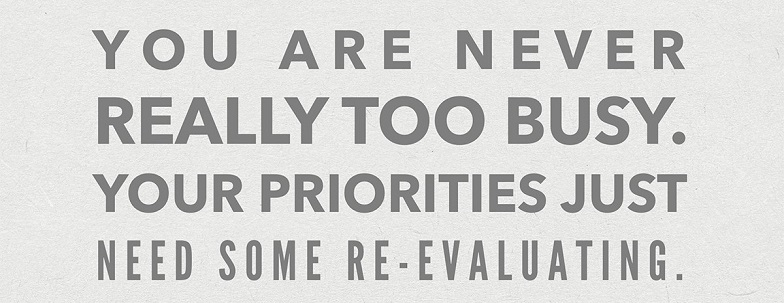

Anything wrong to think, eh?
• To deal with a problem what we mostly do is we try to escape it by doing things like hosting a pity party. And although that's a temporary distraction, it just prolongs the pain. The only way to get through uncomfortable emotions, the only way to deal with them, is you have to go through them. To let yourself feel sad. And then move on. To gain confidence in your ability, to deal with that discomfort.
• Unhealthy beliefs about others come about because we compare ourselves to other people. We think that they're either above us or below us. Or we think that they can control what we feel. Or that we can control how they behave. Or we blame them for holding us back. But really it's our own choices that do that. You have to accept that you're your own person and other people are separate from you. The only person that you should compare yourself to is the person that you were yesterday. Your world is what you make it.
• Belief like fear or love, is forced to be understood as we understand the theory of relativity and principles of uncertainty. Phenomena that determine the course of our lives. Yesterday, my life was headed in one direction. Today, it is headed in another. Yesterday, I believe I would never have done what I did today. These forces that often remake time and space, they can shape and alter who we imagine ourselves to be, begin long before we are born, and continue after we perish. Our lives and our choices like quantum trajectories are understood moment to moment at each point of intersection, each encounter, suggest a new potential direction.
• Any intelligent fool can make things bigger, more complex, and more violent. It takes a touch of genius, and a lot of courage to move in the opposite direction.
• The boundary between noise and sound are conventions. All boundaries are conventions, waiting to be transcended. One may transcend any convention, if only one can first conceive of doing so. Separation is just an illusion. Our life extends far beyond our limitations.
• To be is to be perceived. And so to know thyself is only possible through the eyes of the others. Our lives are not our own. From womb to tomb, we're bound to others. Past and present. And by each crime and every kindness rebirth our future.
• Tying strings together is a union. Connecting to people is a union. The flow of time is a union. These are all part of the god's power. - I believe that sometimes! Just don't know why.

• Pretty words alone won't sustain you. Kindness alone won't heal you. So what is it that was stolen from you in this unchanging world? What is it that you hear? A song of color! Everything is bright! Let our crumbled dreams resound at the edge of tomorrow. At the end of the world, the light that's reborn becomes one with us, that now blows in the winds.
• This corrupt world is filled with demons. What is justice? Resist! don't just question. The flower of evil, dreams of hypocrisy, give your gaze to the eyes that see them. The line between right and wrong cannot be known. When light is gone and you slumber, like an unborn child in the womb of darkness, isolation is what you love. It will probably be your only ally. One by one, stained with the tide of blood, you were into this era. What is truth? A seed of secrecy buried where no one knows. Believe only in what you must protect. And in your own way, you'll set yourself free.
• What is it that you want to tell me with your empty eyes? I think of you but immediately you fade from my mind again. Don't hold me back. That sort of caring is misplaced. I have to atone for my sins. There is no reason for me to be alive. Just end it all. Love will ruin my heart. My caring is making me fragile. I never showed my weakness until now. I used to be able to endure any hardship. I wish I'd never known love.
• I hid my love deep inside me. We stumble in search of courage through the night. Now is the time to put it into words, without doubt and weakness in your eyes. I want to be able to accept whatever may come, I can no longer turn back. I surrender myself to the instincts inside me to survive and continue to believe that answers await me in this chaos. There was a time when I could describe my dreams clear as water, and now they will rise from the ruins of my heart. You will hear my indomitable voice until we reach our goal.

Live to live!
• People don't go around saying what they feel whenever they feel it. They have guards and shields and other metaphors. Why? Because we're all messed up and scared and trying to be something that we're not. And if we all went around just declaring our innermost desires to the exact people we felt them for, well, then we'd all end up happy, or something.
• Who am I? I am me. Nothing means anything about us when we recognize we're not in control, we didn't do it, we're not to blame for it.
• When we use social media a hormone called dopamine is released which is the exact hormone that's released when we take alcohol, or when we smoke or when we gamble. So, when you're out there with your friends and you're constantly chatting with a person who is not there, it's a problem!
• You may fake many things to a person. But you cannot fake warmth.
• Why do people lie? It's not just to struggle against each other. It's also because there's something that they're seeking.
• A world without change mustn't exist. You can hardly call it life. It's nothing more than experience. The same as a world of memories. Just a world that's closed and completed. That's a place I would't want to live in.
• You may believe that a new world that you envision will be best for all. But forcing your intentions on others is no different from an evil act.
• All men are not equal, they are of their own.
• Failing to see anything good on the other side makes a dialogue impossible. Without a dialogue, we will keep repeating the same mistakes, because we will not learn anything new.
• You never really understand a person until you consider things from his point of view.